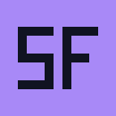

Super Flip CB
Conecte sua biblioteca da rede local.
O PC e a TV precisam estar na mesma rede. Se o servidor estiver desligado, inicie-o e tente novamente.

Conecte sua biblioteca da rede local.
O PC e a TV precisam estar na mesma rede. Se o servidor estiver desligado, inicie-o e tente novamente.